Replication of Chapter 5 of Quantitative Social Science: An Introduction
Stefan Müller and Kenneth Benoit
Source:vignettes/pkgdown/replication/qss.Rmd
qss.Rmdlibrary("quanteda")
In this vignette we show how the quanteda package can be used to replicate the text analysis part (Chapter 5.1) from Kosuke Imai’s book Quantitative Social Science: An Introduction (Princeton: Princeton University Press, 2017).
Download the Corpus
To get the textual data, you need to install and load the qss package first that comes with the book.
devtools::install_github("kosukeimai/qss-package", build_vignettes = TRUE)
Section 5.1.2: Document-Term Matrix
Next, we transform the corpus to a document-feature matrix. dfm_prep (used in sections 5.1.4 and 5.1.5) is a dfm in which numbers and punctuation have been removed, and in which terms have been converted to lowercase. In dfm_papers, the words have also been stemmed and a standard set of stopwords removed.
# transform corpus to a document-feature matrix dfm_prep <- dfm(corpus_raw, remove_numbers = TRUE, tolower = TRUE, remove_punct = TRUE, verbose = TRUE)
## Creating a dfm from a corpus input...## ...lowercasing## ...found 85 documents, 8,631 features## ...complete, elapsed time: 0.578 seconds.## Finished constructing a 85 x 8,631 sparse dfm.# remove stop words and stem words dfm_papers <- dfm(dfm_prep, stem = TRUE, remove = stopwords("english")) # inspect dfm_papers
## Document-feature matrix of: 85 documents, 4,860 features (89.1% sparse) and 3 docvars.
## features
## docs unequivoc experi ineffici subsist feder govern call upon deliber new
## No. 1 1 1 1 1 1 9 1 6 3 5
## No. 2 0 3 0 0 2 9 1 1 1 2
## No. 3 0 1 0 0 2 20 0 0 0 1
## No. 4 0 2 0 0 0 21 1 0 0 0
## No. 5 0 1 0 0 0 3 0 0 0 0
## No. 6 0 3 0 0 0 4 0 4 0 1
## [ reached max_ndoc ... 79 more documents, reached max_nfeat ... 4,850 more features ]# sort into alphabetical order of features, to match book example dfm_papers <- dfm_papers[, order(featnames(dfm_papers))] # inspect some documents in the dfm head(dfm_papers, nf = 8)
## Document-feature matrix of: 6 documents, 8 features (97.9% sparse) and 3 docvars.
## features
## docs ` 1st 2d 3d 4th 5th abandon abat
## No. 1 0 0 0 0 0 0 0 0
## No. 2 0 0 0 0 0 0 0 0
## No. 3 0 0 0 0 0 0 0 0
## No. 4 0 0 0 0 0 0 0 0
## No. 5 0 1 0 0 0 0 0 0
## No. 6 0 0 0 0 0 0 0 0The tm package considers features such as “1st” to be numbers, whereas quanteda does not. We can remove these easily using a wildcard removal:
dfm_papers <- dfm_remove(dfm_papers, "[0-9]", valuetype = "regex", verbose = TRUE)
## removed 5 featureshead(dfm_papers, nf = 8)
## Document-feature matrix of: 6 documents, 8 features (97.9% sparse) and 3 docvars.
## features
## docs ` abandon abat abb abet abhorr abil abject
## No. 1 0 0 0 0 0 0 0 0
## No. 2 0 0 0 0 0 0 1 0
## No. 3 0 0 0 0 0 0 0 0
## No. 4 0 0 0 0 0 0 0 0
## No. 5 0 0 0 0 0 0 0 0
## No. 6 0 0 0 0 0 0 0 0Section 5.1.3: Topic Discovery
We can use the textplot_wordcloud() function to plot word clouds of the most frequent words in Papers 12 and 24.
set.seed(100) textplot_wordcloud(dfm_papers[c("No. 12", "No. 24"), ], max.words = 50, comparison = TRUE)

Since quanteda cannot do stem completion, we will skip that part.
Next, we identify clusters of similar essay based on term frequency-inverse document frequency (tf-idf) and apply the \(k\)-means algorithm to the weighted dfm.
# tf-idf calculation dfm_papers_tfidf <- dfm_tfidf(dfm_papers, base = 2) # 10 most important words for Paper No. 12 topfeatures(dfm_papers_tfidf[12, ], n = 10)
## revenu contraband patrol excis coast trade per
## 19.42088 19.22817 19.22817 19.12214 16.22817 15.01500 14.47329
## tax cent gallon
## 13.20080 12.81878 12.81878# 10 most important words for Paper No. 24 topfeatures(dfm_papers_tfidf[24, ], n = 10)
## garrison dock-yard settlement spain armi frontier arsenal
## 24.524777 19.228173 16.228173 13.637564 12.770999 12.262389 10.818782
## western post nearer
## 10.806108 10.228173 9.648857We can match the clustering as follows:
k <- 4 # number of clusters # subset The Federalist papers written by Hamilton dfm_papers_tfidf_hamilton <- dfm_subset(dfm_papers_tfidf, author == "hamilton") # run k-means km_out <- stats::kmeans(dfm_papers_tfidf_hamilton, centers = k) km_out$iter # check the convergence; number of iterations may vary
## [1] 2colnames(km_out$centers) <- featnames(dfm_papers_tfidf_hamilton) for (i in 1:k) { # loop for each cluster cat("CLUSTER", i, "\n") cat("Top 10 words:\n") # 10 most important terms at the centroid print(head(sort(km_out$centers[i, ], decreasing = TRUE), n = 10)) cat("\n") cat("Federalist Papers classified: \n") # extract essays classified print(docnames(dfm_papers_tfidf_hamilton)[km_out$cluster == i]) cat("\n") }
## CLUSTER 1
## Top 10 words:
## armi militia revenu militari war trade taxat upon
## 6.271473 5.204072 4.634529 4.413837 4.349851 4.222969 4.065847 4.049374
## land tax
## 4.007387 3.889522
##
## Federalist Papers classified:
## [1] "No. 6" "No. 7" "No. 8" "No. 11" "No. 12" "No. 15" "No. 21" "No. 22"
## [9] "No. 24" "No. 25" "No. 26" "No. 29" "No. 30" "No. 34" "No. 35" "No. 36"
##
## CLUSTER 2
## Top 10 words:
## juri trial court crimin admiralti equiti chanceri
## 218.20102 84.74567 62.47940 42.06871 40.87463 38.24428 37.86574
## common-law probat civil
## 27.04695 27.04695 26.77843
##
## Federalist Papers classified:
## [1] "No. 83"
##
## CLUSTER 3
## Top 10 words:
## court appel jurisdict suprem juri tribun cogniz inferior
## 69.68857 35.27513 25.46591 24.79126 22.16104 21.27125 19.12214 18.76875
## appeal re-examin
## 16.21098 13.52348
##
## Federalist Papers classified:
## [1] "No. 81" "No. 82"
##
## CLUSTER 4
## Top 10 words:
## senat presid claus upon court governor offic appoint
## 5.459987 4.228173 3.530536 3.456783 3.254136 3.134332 3.071945 2.823580
## impeach nomin
## 2.737110 2.658907
##
## Federalist Papers classified:
## [1] "No. 1" "No. 9" "No. 13" "No. 16" "No. 17" "No. 23" "No. 27" "No. 28"
## [9] "No. 31" "No. 32" "No. 33" "No. 59" "No. 60" "No. 61" "No. 65" "No. 66"
## [17] "No. 67" "No. 68" "No. 69" "No. 70" "No. 71" "No. 72" "No. 73" "No. 74"
## [25] "No. 75" "No. 76" "No. 77" "No. 78" "No. 79" "No. 80" "No. 84" "No. 85"Section 5.1.5: Cross-Validation
Finally, we assess how well the model fits the data by classifying each essay based on its fitted value.
# proportion of correctly classified essays by Hamilton mean(hm_fitted[author_data_known$author == "hamilton"] > 0)
## [1] 1# proportion of correctly classified essays by Madison mean(hm_fitted[author_data_known$author == "madison"] < 0)
## [1] 1n <- nrow(author_data_known) hm_classify <- rep(NA, n) # a container vector with missing values for (i in 1:n) { # fit the model to the data after removing the ith observation sub_fit <- lm(author_numeric ~ upon + there + consequently + whilst, data = author_data_known[-i, ]) # exclude ith row # predict the authorship for the ith observation hm_classify[i] <- predict(sub_fit, newdata = author_data_known[i, ]) } # proportion of correctly classified essays by Hamilton mean(hm_classify[author_data_known$author == "hamilton"] > 0)
## [1] 1# proportion of correctly classified essays by Madison mean(hm_classify[author_data_known$author == "madison"] < 0)
## [1] 1disputed <- c(49, 50:57, 62, 63) # 11 essays with disputed authorship tf_disputed <- dfm_subset(tfm, is.na(author)) %>% convert(to = "data.frame") author_data$prediction <- predict(hm_fit, newdata = author_data) author_data$prediction # predicted values
## [1] 0.73688561 -0.13805744 -1.35078839 -0.03818220 -0.27281185 0.71544514
## [7] 1.33186598 0.19419487 0.37522873 -0.20366262 0.67591728 0.99485942
## [13] 1.39358870 -1.18910700 1.20454811 0.64005758 0.91397681 -0.38337508
## [19] -0.62468302 -0.12449276 0.91560123 1.08105705 0.88535667 1.01199958
## [25] 0.08231865 0.72345360 1.08185398 0.71361766 1.47727897 1.53681013
## [31] 1.85581851 0.71928207 1.07671057 1.26171629 0.90807385 1.06348441
## [37] -0.81827318 -0.56125155 -0.27281185 -0.10304108 -0.47339830 -0.17488801
## [43] -0.60651986 -0.86943120 -1.67771035 -0.91485858 -0.13263458 -0.13495322
## [49] -0.96785069 -0.06902493 -1.46794406 -0.27281185 -0.54226168 -0.54530152
## [55] 0.04087236 -0.56414912 -1.18176926 -0.41900312 0.55206970 0.98683635
## [61] 0.59244239 -0.97797908 -0.21198475 -0.18292385 1.15647955 1.12410607
## [67] 0.78355251 0.11202677 1.12627538 0.70796660 0.34757045 0.84264937
## [73] 1.24189733 0.91619843 0.50283000 1.05488104 1.05933797 0.90593132
## [79] 0.54299626 0.64042173 0.91780877 0.31194485 0.80874960 0.73655199
## [85] 1.00901860Finally, we plot the fitted values for each Federalist paper with the ggplot2 package.
author_data$author_plot <- ifelse(is.na(author_data$author), "unknown", as.character(author_data$author)) library(ggplot2) ggplot(data = author_data, aes(x = paper_numeric, y = prediction, shape = author_plot, colour = author_plot)) + geom_point(size = 2) + geom_hline(yintercept = 0, linetype = "dotted") + labs(x = "Federalist Papers", y = "Predicted values") + theme_minimal() + theme(legend.title=element_blank())
